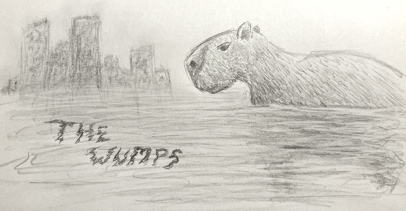

|

The Wumps |
|
Summary
Creative group project in creating an illustrated storybook. Our project explores themes of Man vs Nature; both in humanity's lack of care for the environment, as well as the uprising of a hostile force that seeks to pry man's grip from the world. Responsibilities For this project, I contributed mostly to character concepts and illustration. I contributed very little to the written content of the story.Skills ¬ Collaboration |
OverviewWe created a dystopian future in which humanity has continued to show no respect for the natural world. The world itself has seen significant climate change, and the world is warmer and wetter, with most of today's cities below new sea-level and as a result permanently flooded. |